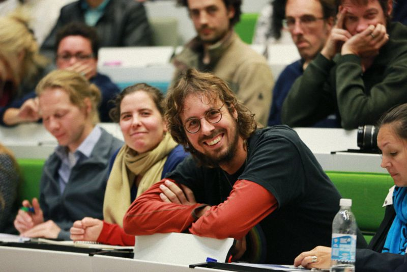

荷兰莱顿大学问答
『2015年9月28日』
（一）问：大师，心性是什么，您是怎么认识的？
答：心性就是，它。（笑）

（二）问：我有一个关于布施是善是恶的问题。前段时间在火车上，有个流浪汉向我寻求布施，我就给了他一些欧元，但身边的荷兰朋友告诉我：“从他的样子判断，可能是个瘾君子，你这样做并不好。”我心里特别纠结，表面看，这是一次善意的布施；但长远看，反而会助长他的恶行。所以想请问，遇到这种情况该怎么办？
答：他如果扮作乞丐或者其他可怜角色，这本身就很可怜，值得布施。况且布施得并不是很多，不用纠结。
以前在其他国家，我也觉得吸毒很可怕。但荷兰不太一样，那天去一个教育所，看到很多吸大麻的人，好像也没想象中可怕。
所以你这么做，应该是没问题的。
（三）问：我是修学净土的，净土特别讲究信、愿、行，但我对于“信”这方面比较反复，有时候相信有西方净土、阿弥陀佛和西方三圣，有时候又产生怀疑。我很苦恼，希望您能开示一下。
答：现在很多学净土的人觉得，单纯依靠信、愿、行就可以，不需要学习理论，其实这对一些年轻人来讲，不一定适合。还是要系统闻思，否则很难断除怀疑。
因此，希望你能长期、系统、认真地学习，很多疑问自然而然会消除。那个时候，才是真正在修学净土。
（四）问：能介绍一下您的根本上师——法王晋美彭措吗？
答：法王晋美彭措的传记，我曾经专门写过一本，后来有一位比利时学者把它翻译成了英文。今天在这里讲的话，可能讲不完，但如果归纳法王一生的事业，可以说是两点：弘扬真理和帮助众生。一方面他始终在认真学习，从未间断；另一方面，他把自己的一生都奉献给了所有有情。
我在法王身边当过十九年翻译，也跟随他去过很多国家，当时并没有特别珍惜，但现在觉得非常珍贵。法王已经离开人世十几年了，但在我的感觉中，他的加持无处不在。
（五）问：我来自乌克兰，也许您知道我的国家发生了战争。您在演讲中提到，世上的每一件事，都有其因缘。我很愿意相信这一点，所以想请问您引发战争的原因是什么？我想寻找真正有价值的东西，让所有乌克兰人民活得不那么艰难。
答：其实，今天遇到再大的困难，过一段时间就成了梦。
无论成功者还是失败者，每个人的人生路上，都会有各种各样的坎坷、不平，有些人会勇敢面对，有些人则可能陷入过度的伤心、绝望，没办法渡过。
这种时候，我们可能不必想很多，想“它为什么会这样”，而要让自己勇敢，面对它、越过它，到最后你会发现，这一切其实跟梦没有差别。
所以在困难中要随缘，不要特别在意和执著。
扬森博士：
首先非常荣幸地代表莱顿大学，感谢索达吉堪布为我们带来今晚的演讲，以及下午的座谈。
也要感谢所有志愿者，因为你们的努力，让这次活动得以成办，让这个礼堂变得如此美丽——它平时看起来不是这样。
当然还要感谢所有观众，感谢你们的到来和提问。
谢谢大家！